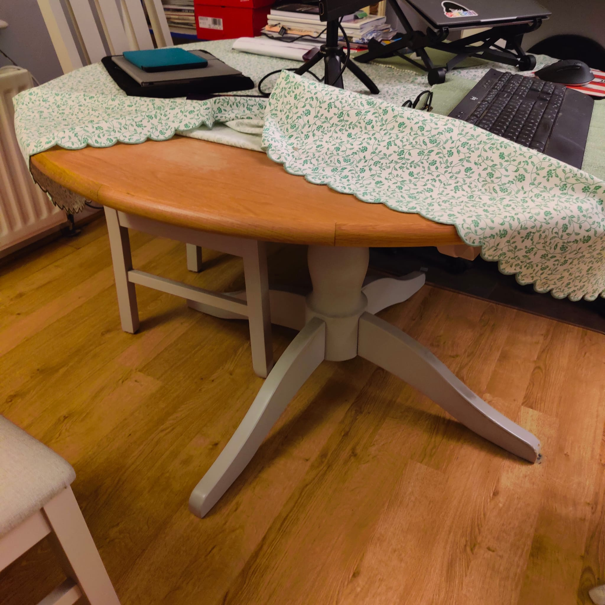
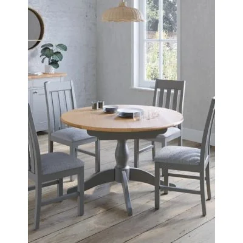

M&S Padstow Extending Dining Table + 2 Chairs
Marks & Spencer
More details
Round Padstow dining table in light grey and oak, with two matching slatted chairs with grey upholstered seats. Seats four comfortably and extends to an oval six-seater using the built-in butterfly leaf.
Condition: Very good used condition. Light surface mark; some scratches/small marks around the pedestal feet from normal cleaning and use.
The central pedestal unbolts from the tabletop for easier transport.

Original M&S product image, shown for reference.